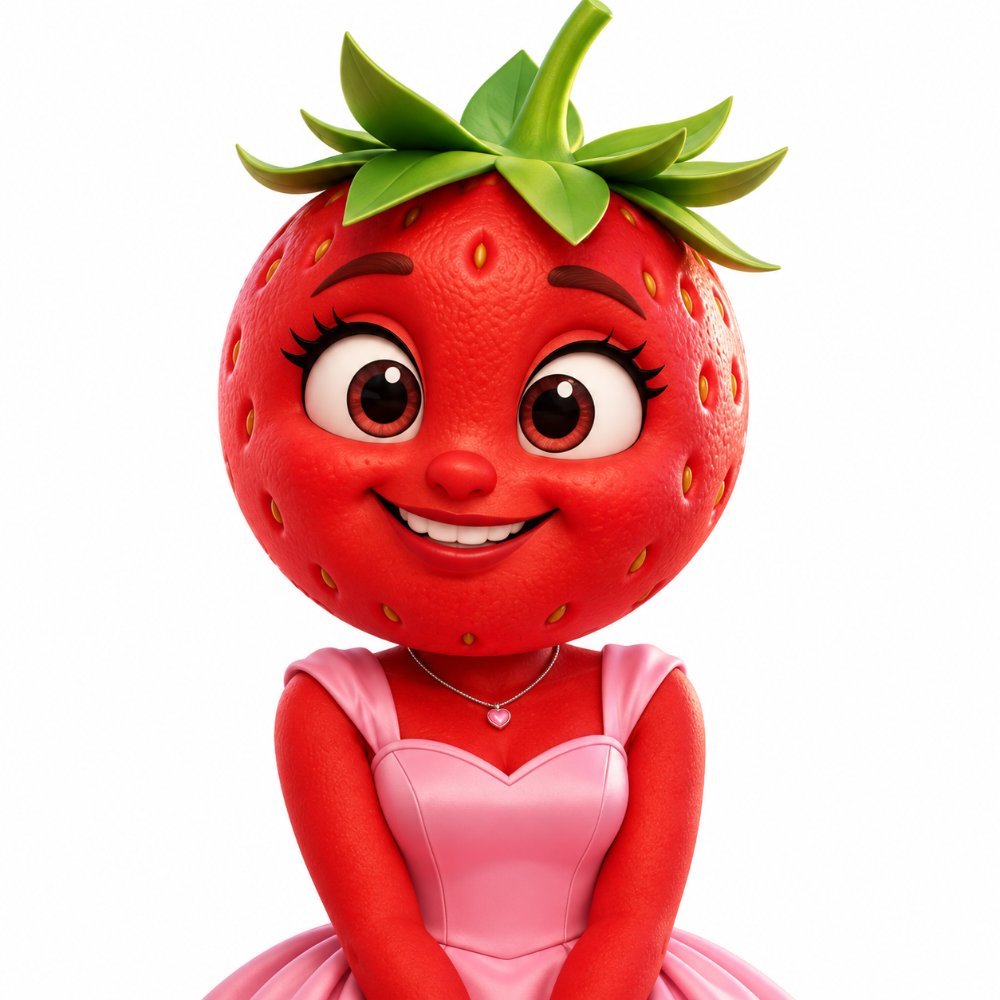
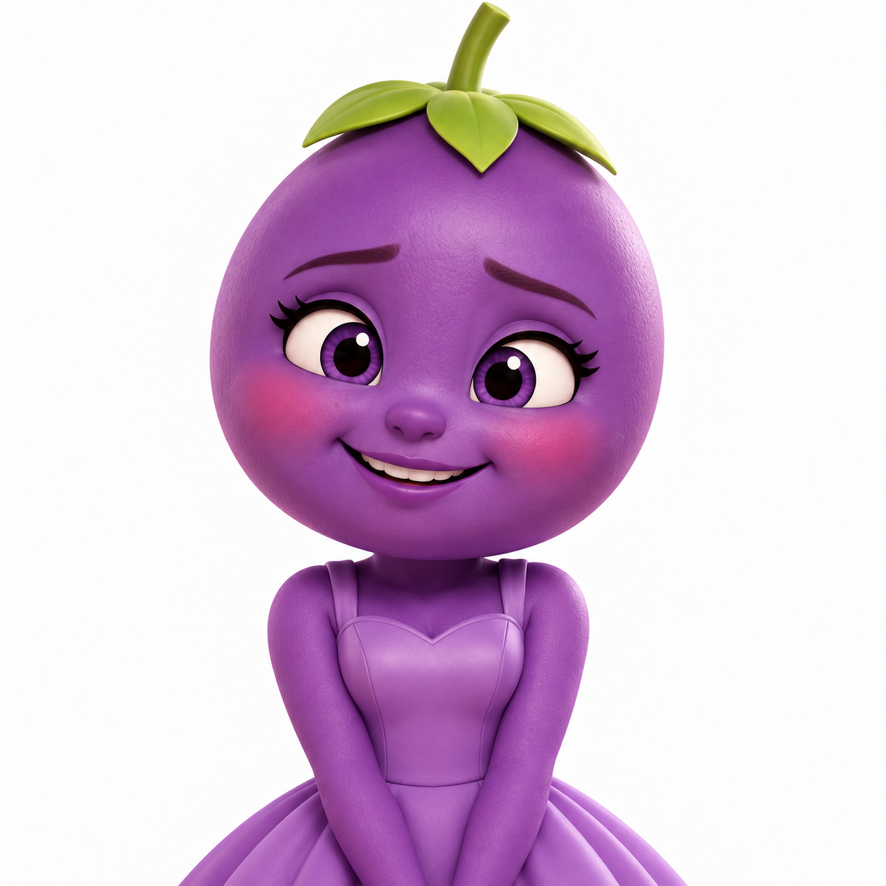
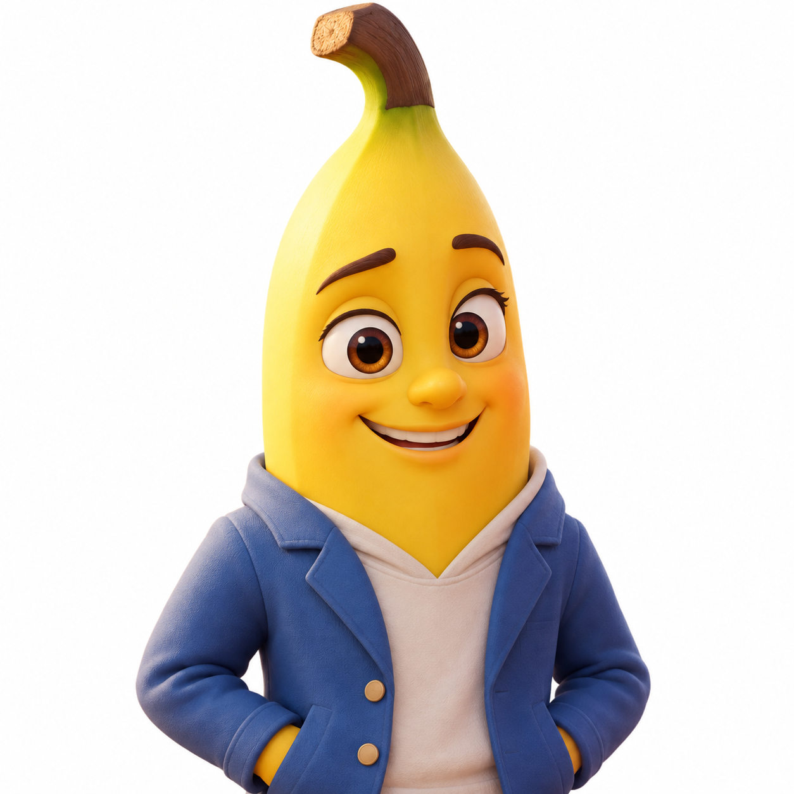

Fresa
Comparte fotografías en redes sociales y resulta afectada por la publicación de imágenes sin permiso.
CONVIVENCIA DIGITAL
Una fotografía compartida sin permiso cambia la tranquilidad de Fresa. El apoyo de Plátano le recuerda que no está sola.
UNA FRUTINOVELA DE THE NEBULA SOCIETY
Ver episodio ↓ EP. 003 / CIBERACOSO
EP. 003 / CIBERACOSO01 / LA HISTORIA
SINOPSIS
Fresa disfruta compartiendo fotografías en sus redes sociales, pero su tranquilidad cambia cuando Uva publica imágenes suyas sin su consentimiento para burlarse de ella. Las publicaciones afectan a Fresa, quien recibe el apoyo de Plátano. Cuando se descubre lo sucedido, Uva reconoce su error y se disculpa. La historia nos recuerda que detrás de cada pantalla hay una persona que merece respeto.
PRODUCIDA POR THE NEBULA SOCIETY
FORMATO VERTICAL / 9:16
Sin reproducción automática
Transcripción facilitada por el equipo, en orden. No contiene marcas de tiempo ni sustituye a los subtítulos sincronizados.
CHANGE LAB / EP. 003
No se pudo cargar la frutinovela.
Comprueba tu conexión e intenta cargar la página de nuevo.
Abrir el video directamenteUna historia de ficción sobre ciberacoso.
Subtítulos sincronizados pendientes. Puedes leer los diálogos junto al video.
Leer la transcripción de la frutinovela02 / PERSONAJES DE LA HISTORIA

Comparte fotografías en redes sociales y resulta afectada por la publicación de imágenes sin permiso.
Amiga que observa la actividad de Fresa en redes sociales.

Publica imágenes de Fresa sin autorización para burlarse de ella y finalmente se disculpa.

Apoya y consuela a Fresa.
Avisa a Uva que se descubrió quién publicó las imágenes.
03 / DETRÁS DE LA HISTORIA
Es el acoso mediante medios digitales, como redes sociales, chats o juegos en línea. Puede incluir burlas, amenazas o publicaciones humillantes que se repiten o se difunden. Compartir ese contenido puede ampliar el daño.
Publicar una fotografía propia no autoriza a otras personas a usarla para burlarse. Antes de compartir imágenes ajenas, pide permiso y respeta la respuesta. El consentimiento también importa en internet.
Las burlas digitales pueden provocar tristeza, vergüenza, aislamiento y temor a participar en redes. Escuchar sin culpar a la persona afectada ayuda a que pueda expresar lo que necesita.
Evita difundir contenido humillante. Acompaña a la persona afectada, busca apoyo de una persona adulta de confianza y utiliza las herramientas de denuncia de la plataforma. Pedir ayuda es una forma de cuidarse.
04 / REFLEXIONA
Elige una opción y comprueba tu respuesta. Puedes cambiarla y volver a intentarlo.
Esta actividad invita a reflexionar; no mide tu conciencia social. Tus respuestas no se guardan.
Para responder y recibir retroalimentación, abre esta página con JavaScript habilitado. También puedes reflexionar sobre estas preguntas:
05 / ACTÚA
Pedir consentimiento antes de publicar fotografías de otras personas.
No compartir contenido humillante.
Buscar apoyo de una persona adulta de confianza.
Utilizar las herramientas de denuncia de las plataformas cuando corresponda.
06 / SIGUE EXPLORANDO
EP. 001 / PANDILLAJE
El precio del dinero fácil
Explorar Pandillaje ↗EP. 002 / FAST FASHION
Detrás de la etiqueta
Explorar Fast Fashion ↗